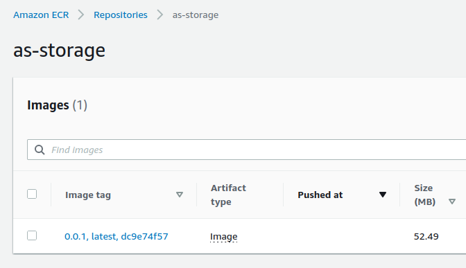
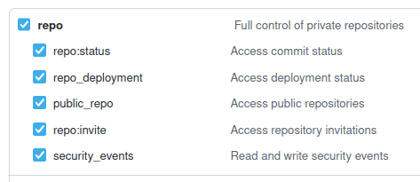
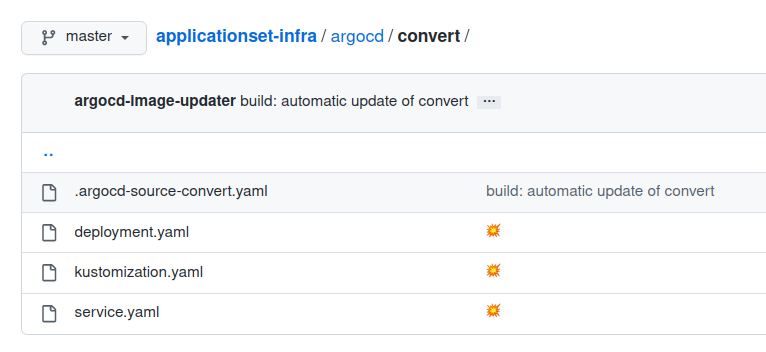
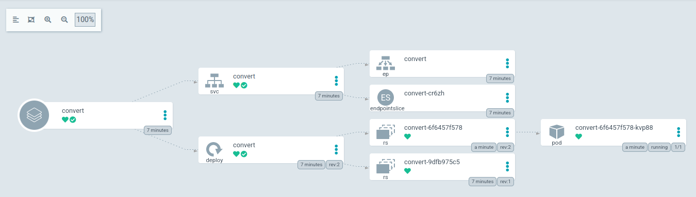
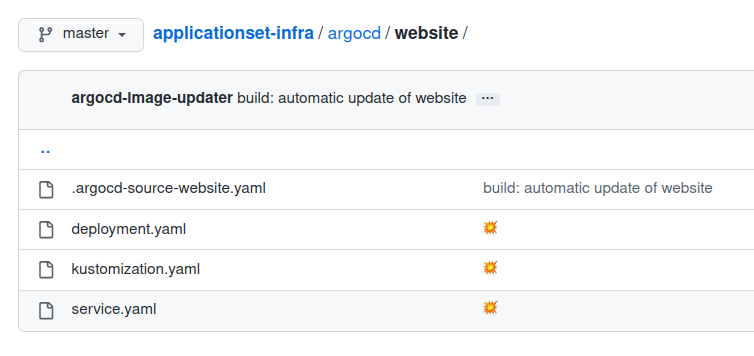
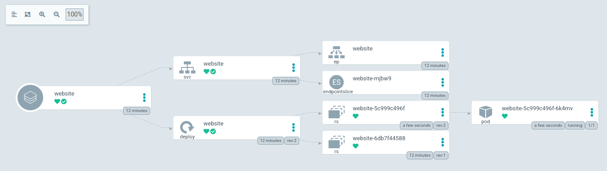

Microservice + ArgoCD ApplicationSet + Image Updater
- Build a microservice consisting of 3 different Docker images
- Build images are pushed to separate private ECR repositories
- Deploy ArgoCD + ArgoCD Image Updater in a Kind cluster
- Use an ApplicationSet manifest to manage the 3 applications
- Update of an application module
- Deploy a new Docker image and see automatic deployment in Kubernetes
The application
This project is composed of different repositories :
- storage : this module is used to push a file to an S3 bucket
- convert : this module is used to convert an image to black and white
- website : this module is the website that displays the converted images
- infra : this module is used to manage the infrastructure (terraform + argocd)
You can fork this differents repositories on your machine
Important : make sure your repositories are private as they will contain sensitive data !
Storage repository
Let’s start by initializing the storage module
The env-create script creates an .env file at the root of the project and installs semver-cli if needed :
# create .env file + install semver-cli
make env-create
You must modify the generated .env file with your own variables :
AWS_REGION
Let’s now initialize terraform :
# terraform init (updgrade) + validate
make terraform-init
We create the infrastructure with terraform :
# terraform create s3 bucket + ecr repo + iam user + setup .env file
make terraform-create
Terraform is used to :
- Create an ECR repository
- Create an S3 bucket
- Create an IAM user with access key
- Store some variables in System Manager Parameter Store
- Add new variables to the .env file
Let’s start the local module :
# run storage server using npm - dev mode
make storage
Run the following command in another terminal window :
# test storage
make test
A test image has been successfully uploaded to our S3 bucket :
We build and push this image to ECR :
# build storage image
make prod-build
# push storage image to ecr
make ecr-push
The image is in our repository :

Convert repository
We initialize the convert module :
# create .env file
make env-create
You must modify the generated .env file with your own variables :
AWS_REGION
Let’s now initialize terraform :
# terraform init (updgrade) + validate
make terraform-init
We create the infrastructure with terraform :
# terraform create ecr repo + setup .env file
make terraform-create
Terraform is used to :
- Create an ECR repository
- Add new variables to the .env file
Let’s start the local module :
# run convert server using npm - dev mode
make convert
Run the following command in another terminal window :
# test convert
make test
Our image :
is converted to black and white at the root of our project :
We build and push this image to ECR :
# build convert image
make prod-build
# push convert image to ecr
make ecr-push
The image is in our repository :
Website repository
We initialize the website module :
# create .env file
make env-create
You must modify the generated .env file with your own variables :
AWS_REGION
Let’s now initialize terraform :
# terraform init (updgrade) + validate
make terraform-init
We create the infrastructure with terraform :
# terraform create ecr repo + setup .env file
make terraform-create
Terraform is used to :
- Create an ECR repository
- Add new variables to the .env file
Let’s start the local project :
# run website server using npm - dev mode
make website
Attention, if you have a similar error …
CONVERT_PORT 4000 ABORT localhost:4000 is not working. Status Code 200 required.
… you need to run the others modules on your machine from other terminal windows :
# run storage server using npm - dev mode
make storage
# run convert server using npm - dev mode
make convert
You can see the website at http://localhost:3000 :
We upload the rhino.png image located in the applicationset-convert/test directory :
The image is converted :
We build and push this image to ECR
# build website image
make prod-build
# push website image to ecr
make ecr-push
The image is in our repository :
Infra repository
The most interesting part starts now !
We initialize the infra module :
# create .env file
make env-create
You must modify the generated .env file with your own variables :
AWS_REGIONGITHUB_OWNERGITHUB_REPO_STORAGEGITHUB_REPO_CONVERTGITHUB_REPO_WEBSITEGITHUB_REPO_INFRA
You need to create a Github Token
You need to select repo :

You need to select admin:public_key :

This Github Token is used by Terraform’s github provider :
provider "github" {
owner = var.github_owner
token = var.github_token
}
To assign an SSH key to your Github account :
resource "github_user_ssh_key" "ssh_key" {
title = var.project_name
key = tls_private_key.private_key.public_key_openssh
}
Now add the .env file with your own GITHUB_TOKEN
Let’s now initialize terraform :
# terraform init (updgrade) + validate
make terraform-init
We create the infrastructure with terraform :
# terraform valiate + apply
make terraform-create
Warning : the creation time is long (~ 8 minutes) !
Terraform is used to :
- Start a Kind cluster
- Create an SSH key and add it to Github
- Install ArgoCD and ArgoCD Image Updater
- ArgoCD’s check interval is defined to
30 seconds(instead of the default3 minutes) and the service is defined toNodePortto be able to access it - ArgoCD Image Updater check interval is defined to
30 seconds(instead of the default2 minutes) - Templates are interpreted with these values
- Namespaces and secrets are defined
Kind
Kind (Kubernetes IN Docker) must be previously installed on your machine
Minikube is very flexible but its startup time is quite long. Kind greatly reduces this time.
Here is a good comparison minikube / kind / k3s
The major disadvantage of Kind is to have to be completely reset (destroyed then created again) when changing its configuration
It’s rather annoying because sometimes you need to change the configuration regularly
When the creation of the resources is finished, we open the ArgoCD web interface :
# open argocd (website)
make argocd-open
Templates have been generated in your argocd directory
You have to push them to the git repository :
Important : make sure your repositories are private as they will contain sensitive data !
git add . && git commit -m :boom: && git push -u origin master
ApplicationSet
The ApplicationSet Controller is a factory of ArgoCD Application
We use a series of Generators to create multiple applications from one place
Our project uses the List Generator to generate 3 applications
A very good video explaining how ApplicationSet works
Note : sometimes it is difficult to debug an ApplicationSet that does not start correctly
And we sometimes lose time when 3 simple Application would have been simpler !
We launch our ApplicationSet :
kubectl apply -f argocd/applicationset.yaml
The 3 applications are installing :

They are now installed :
We open our browser on http://0.0.0.0:9000/ :

We select an image in the applicationset-convert module and then upload it :
The image is converted :
Udating the convert image
Before we start, let’s open a new terminal window in our infra module
We display the continuous logs of the argocd image updater application :
#argocd image updater logs
make image-updater-logs
In the convert module we modify the Javascript code
We switch from this version :
.greyscale() // version 0.0.1
//.tint({ r: 255, g: 0, b: 0 }) // 0.0.2
to this version :
//.greyscale() // version 0.0.1
.tint({ r: 255, g: 0, b: 0 }) // 0.0.2
We will increment our version, from 0.0.1 to 0.0.2
Then build and push this new image to ECR :
# update-patch + ecr-push
make increase-build-push
The image is pushed to ECR :
After a few seconds, ArgoCD Image Updater commits a .argocd-source-convert.yaml file :

And after another delay, ArgoCD is updating the docker image :
The docker image is updated within kubernetes :

We are uploading a new image :
The image has been successfully converted :

Udating the website image
In the website module we modify the CSS code
We switch from this version :
h2 {
margin-bottom: .8em;
/* version 0.0.2 */
/*
font-size: 1.8em;
font-style: italic;
color: red;
*/
to this version :
h2 {
margin-bottom: .8em;
/* version 0.0.2 */
/* */
font-size: 1.8em;
font-style: italic;
color: red;
We increment, build again and push the new image to ECR :
# update-patch + ecr-push
make increase-build-push
The image is pushed :
Then the file .argocd-source-convert.yaml is added :

ArgoCD is updating the docker image :
The image is updated :

After a few seconds, we reload http://0.0.0.0:9000/
The title has changed :
Cleaning
This demonstration is now over, we are destroying the resources :
kubectl delete -f argocd/applicationset.yaml
In each module, execute the following commands :
# terraform destroy
make terraform-destroy
# clear builded docker images
make clear